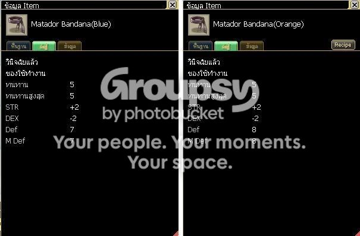

FARMER เขียน:เองจะเอาอะไรหลอมกับอะไรล่ะ...- -
ไม่รู้ คำถามต่อจาก soft cotton
 โดย ECO » อังคาร 06 พ.ค. 2008 7:59 pm
โดย ECO » อังคาร 06 พ.ค. 2008 7:59 pm
NewLegend เขียน:น่าเศร้าที่มันแยกของแบบนั้นไม่ได้นะ :wink:
แต่รู้สึกว่าถ้าเป็นบูสเตอร์มันจะแยกจากบูสมารไปเป็นมนุษย์อีกทีได้มั้ง(ไม่ชัวร์เท่าไหร่เพราะผมไม่มีบูส :x )
 โดย ECO » อังคาร 06 พ.ค. 2008 8:14 pm
โดย ECO » อังคาร 06 พ.ค. 2008 8:14 pm
ผมก็ไม่ชัวร์เท่าไหร่หรอกครับเพราะผมไม่มีบูสPantera เขียน:NewLegend เขียน:น่าเศร้าที่มันแยกของแบบนั้นไม่ได้นะ :wink:
แต่รู้สึกว่าถ้าเป็นบูสเตอร์มันจะแยกจากบูสมารไปเป็นมนุษย์อีกทีได้มั้ง(ไม่ชัวร์เท่าไหร่เพราะผมไม่มีบูส :x )
ได้ด้วยรึ ถ้าได้ทำไมคนเค้าตั้งแลกมารเปนเทพเทพเปนมารกันจังล่ะ
ไม่ได้มิใช่รึ หลอมเปนเทพไปแล้วก้อเปนเทพไปเลยหนิกลับไม่ได้
 โดย ECO » พุธ 07 พ.ค. 2008 4:06 am
โดย ECO » พุธ 07 พ.ค. 2008 4:06 am
 โดย ECO » พุธ 07 พ.ค. 2008 8:18 am
โดย ECO » พุธ 07 พ.ค. 2008 8:18 am
Pantera เขียน:NewLegend เขียน:น่าเศร้าที่มันแยกของแบบนั้นไม่ได้นะ :wink:
แต่รู้สึกว่าถ้าเป็นบูสเตอร์มันจะแยกจากบูสมารไปเป็นมนุษย์อีกทีได้มั้ง(ไม่ชัวร์เท่าไหร่เพราะผมไม่มีบูส :x )
ได้ด้วยรึ ถ้าได้ทำไมคนเค้าตั้งแลกมารเปนเทพเทพเปนมารกันจังล่ะ
ไม่ได้มิใช่รึ หลอมเปนเทพไปแล้วก้อเปนเทพไปเลยหนิกลับไม่ได้
Zilchkung เขียน:Matador Bandana(Orange) มีไหมคับ
แล้ว
Matador Bandana(Blue) กับ Matador Bandana(Orange) ต่างกันยังไง?
(หมวก80อ่ะ)

กำลังดูบอร์ดนี้: ไม่มีสมาชิก และ บุคคลทั่วไป 2 ท่าน